<!DOCTYPE lake>
<h2 data-lake-id="cUY02" id="cUY02"><span data-lake-id="u96147c27" id="u96147c27">学习目标</span></h2><ol list="uf6b8dc59"><li data-lake-id="ua0396514" fid="uddfd647a" id="ua0396514"><span data-lake-id="u20b83b9c" id="u20b83b9c">掌握外部中断开发流程</span></li><li data-lake-id="u1127a958" fid="uddfd647a" id="u1127a958"><span data-lake-id="u5d866a7a" id="u5d866a7a">理解中断触发机制</span></li><li data-lake-id="u421d163c" fid="uddfd647a" id="u421d163c"><span data-lake-id="u538135ab" id="u538135ab">掌握硬件触发机制实现</span></li><li data-lake-id="u1ee9f225" fid="uddfd647a" id="u1ee9f225"><span data-lake-id="udec07c89" id="udec07c89">掌握软件触发机制实现</span></li><li data-lake-id="u0c2cfeba" fid="uddfd647a" id="u0c2cfeba"><span data-lake-id="u5e22db9d" id="u5e22db9d">掌握中断消抖处理方式</span></li></ol><h2 data-lake-id="wQPUA" id="wQPUA"><span data-lake-id="uc59b0fff" id="uc59b0fff">学习内容</span></h2><h3 data-lake-id="B7UgK" id="B7UgK"><span data-lake-id="ua3b51a7c" id="ua3b51a7c">外部中断概念</span></h3><p data-lake-id="ud525da42" id="ud525da42"><span class="lake-fontsize-12" data-lake-id="uaafe5462" id="uaafe5462">外部中断，英文缩写为EXTI，全称为</span><strong><span class="lake-fontsize-12" data-lake-id="u7202d4c3" id="u7202d4c3">Ext</span></strong><span class="lake-fontsize-12" data-lake-id="u84253891" id="u84253891">ernal </span><strong><span class="lake-fontsize-12" data-lake-id="u407bb6bc" id="u407bb6bc">I</span></strong><span class="lake-fontsize-12" data-lake-id="u748eea97" id="u748eea97">nterrupt的缩写，直译过来就是是外部的中断。它是指在嵌入式系统中负责检测和处理外部中断和事件的模块。它通过检测外部信号的电平变化或边沿触发，生成对应的中断或事件，并将其送到中断控制器或事件屏蔽控制器进行处理。</span></p><p data-lake-id="ub6bde026" id="ub6bde026"><span class="lake-fontsize-12" data-lake-id="u62dcaa37" id="u62dcaa37">在许多嵌入式系统中，包括STM32和GD32等，EXTI模块通常由多个输入线、边沿检测电路、触发选择寄存器、软件中断事件寄存器、请求挂起寄存器、中断屏蔽寄存器、事件屏蔽寄存器等部分组成，可以实现对外部中断和事件的高效检测和处理。</span></p><p data-lake-id="u118ce074" id="u118ce074"><span class="lake-fontsize-12" data-lake-id="uab6fd14a" id="uab6fd14a" style="color: rgb(34,30,31)">EXTI（中断/事件控制器）包括 23 个相互独立的边沿检测电路并且能够向处理器内核产生中断 请求或唤醒事件。</span></p><h3 data-lake-id="rYgBB" id="rYgBB"><span data-lake-id="u7a80c538" id="u7a80c538" style="color: rgb(34,30,31)">中断触发机制</span></h3><p data-lake-id="u9349b120" id="u9349b120"><span class="lake-fontsize-12" data-lake-id="ua9a8164b" id="ua9a8164b">外部中断触发机制，分为两种：</span></p><ul list="ud7e78177"><li data-lake-id="u584578aa" fid="uacafe0ba" id="u584578aa"><span class="lake-fontsize-12" data-lake-id="u3ed5923d" id="u3ed5923d">硬件触发</span></li><li data-lake-id="u668caea5" fid="uacafe0ba" id="u668caea5"><span class="lake-fontsize-12" data-lake-id="uab8e5fe3" id="uab8e5fe3">软件触发</span></li></ul><p data-lake-id="uf0e2e01a" id="uf0e2e01a"><span class="lake-fontsize-12" data-lake-id="u6ae65c58" id="u6ae65c58">硬件触发机制主要是针对外部触发了芯片的引脚，造成引脚的电平发生变化，从而导致中断产生。</span></p><p data-lake-id="ub16a8af5" id="ub16a8af5"><span class="lake-fontsize-12" data-lake-id="uff1ae782" id="uff1ae782">硬件触发机制</span><span class="lake-fontsize-12" data-lake-id="u7fb74aac" id="u7fb74aac" style="color: rgb(34,30,31)">支持三种触发类型：上升沿触发、下降沿触发和任意沿触发。</span></p><p data-lake-id="uf7f508f9" id="uf7f508f9">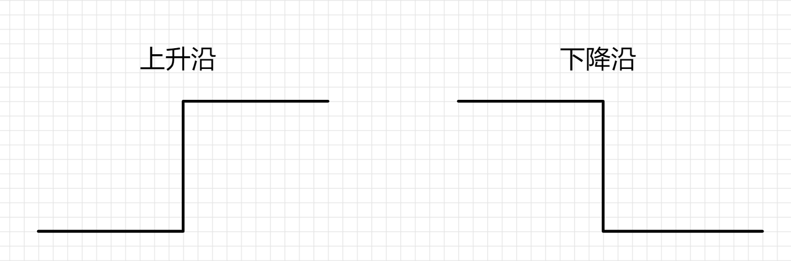</p><blockquote data-lake-id="u5d42c78f" id="u5d42c78f"><p data-lake-id="ua2dbe4f8" id="ua2dbe4f8"><span data-lake-id="u9637f43b" id="u9637f43b">上升沿：之前是低电平，突然变成高电平了，这个数瞬间，我们称之为触发了上升沿</span></p><p data-lake-id="ub5c829a3" id="ub5c829a3"><span data-lake-id="u55d11b4f" id="u55d11b4f">上升沿：之前是高电平，突然变成低电平了，这个数瞬间，我们称之为触发了下降沿</span></p></blockquote><p data-lake-id="ue6e19fba" id="ue6e19fba"><span class="lake-fontsize-12" data-lake-id="uac9614f4" id="uac9614f4">硬件触发外部中断，</span><span class="lake-fontsize-12" data-lake-id="u9da4298f" id="u9da4298f" style="color: rgb(34,30,31)">简单的理解就是，如果我配置了某个引脚外部中断功能，那么当这个引脚的电平发生变化时，就会触发中断机制，代码层级就会调用到我的中断函数。</span></p><p data-lake-id="u725e2c1d" id="u725e2c1d"><span class="lake-fontsize-12" data-lake-id="u660e03d9" id="u660e03d9" style="color: rgb(34,30,31)">​</span><br/></p><p data-lake-id="u40ab9c52" id="u40ab9c52"><span class="lake-fontsize-12" data-lake-id="uc5dddac8" id="uc5dddac8" style="color: rgb(34,30,31)">软件触发机制，主要针对的是业务逻辑中，需要手动的触发中断事件，去执行中断逻辑而去设计的。他不需要对引脚做任何处理，也可以触发。</span></p><p data-lake-id="uc7ea639c" id="uc7ea639c">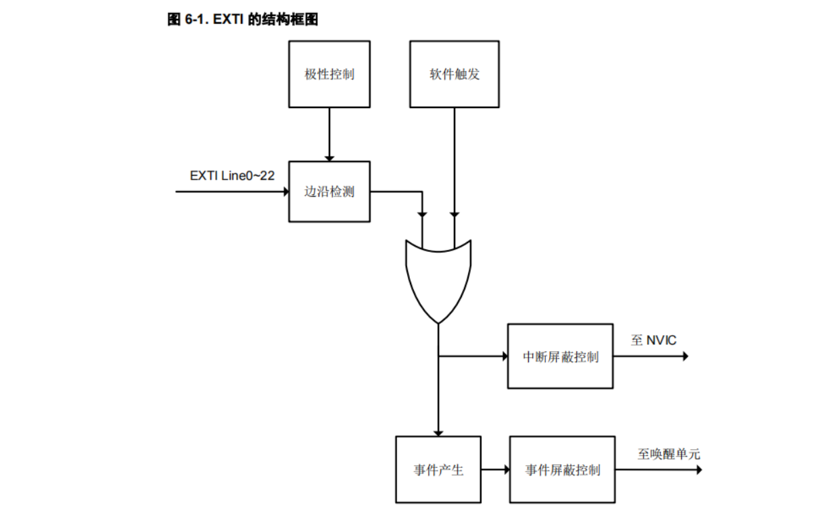</p><h3 data-lake-id="KQdAl" id="KQdAl"><span data-lake-id="u8ac18dac" id="u8ac18dac" style="color: rgb(34,30,31)">中断触发源</span></h3><p data-lake-id="u79b968dd" id="u79b968dd">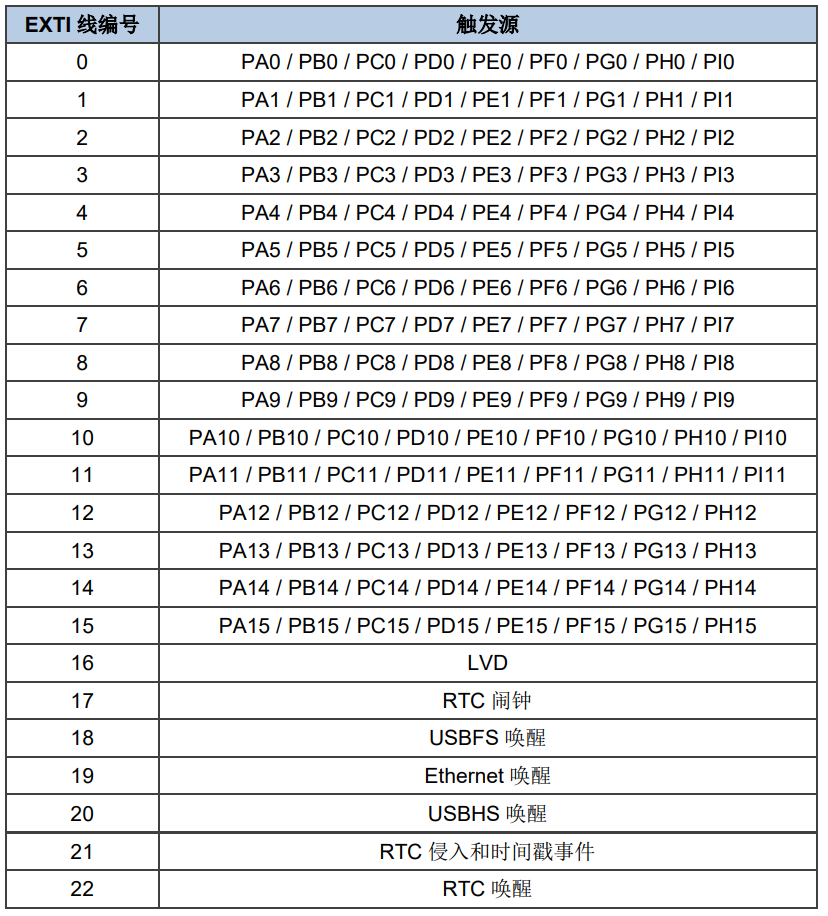</p><p data-lake-id="u3ddf5704" id="u3ddf5704"><span data-lake-id="uc22371a9" id="uc22371a9">引脚的外部中断总共有15个，对于同一个PIN，例如PA0和PB0是不可以同时触发的。</span></p><p data-lake-id="u96c66f21" id="u96c66f21">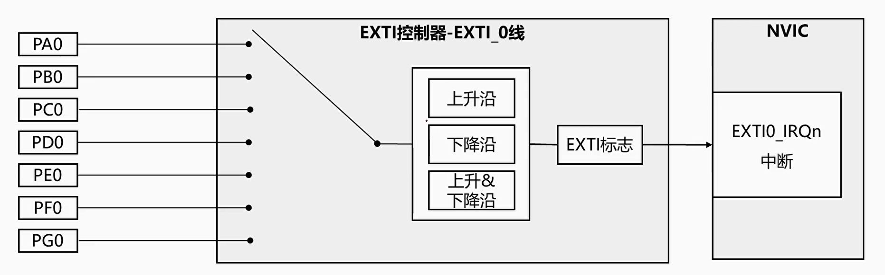</p><h3 data-lake-id="ciOkd" id="ciOkd"><span data-lake-id="u0a7929c8" id="u0a7929c8">硬件外部中断</span></h3><h4 data-lake-id="JMwYF" id="JMwYF"><span data-lake-id="u43c66502" id="u43c66502">需求</span></h4><p data-lake-id="u8746c1ea" id="u8746c1ea">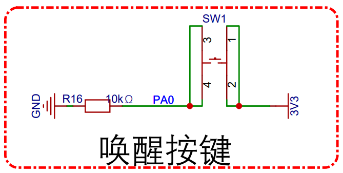</p><ul list="u7c27e328"><li data-lake-id="u65cbc8a4" fid="uc05c8ef3" id="u65cbc8a4"><span data-lake-id="u15715e98" id="u15715e98">按键按下时，打印日志</span></li><li data-lake-id="u5857a766" fid="uc05c8ef3" id="u5857a766"><span data-lake-id="ucee48703" id="ucee48703">按键抬起时，打印日志</span></li><li data-lake-id="ua9a3e875" fid="uc05c8ef3" id="ua9a3e875"><span data-lake-id="u179a3cba" id="u179a3cba">不通过键盘扫描实现，通过中断实现</span></li></ul><h4 data-lake-id="t0rD7" id="t0rD7"><span data-lake-id="u39887619" id="u39887619">开发流程</span></h4><ol list="ue2261e1b"><li data-lake-id="u6f09b975" fid="u12efdeed" id="u6f09b975"><span data-lake-id="ue9807fae" id="ue9807fae">依赖添加</span></li></ol><p data-lake-id="u20344ad7" id="u20344ad7" style="padding-left: 2em"><span data-lake-id="ub82679af" id="ub82679af">添加</span><code data-lake-id="u979f7d85" id="u979f7d85"><span data-lake-id="uc992ddd5" id="uc992ddd5">gd32f4xx_exti.c</span></code></p><p data-lake-id="u0dbe40e6" id="u0dbe40e6" style="padding-left: 2em">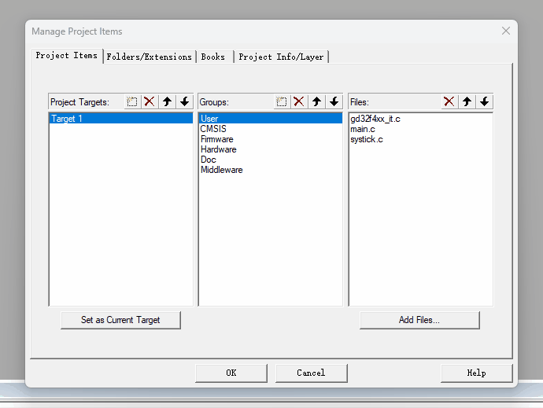</p><p data-lake-id="u0037e8f4" id="u0037e8f4" style="padding-left: 2em"><span data-lake-id="u196d3f58" id="u196d3f58">添加</span><code data-lake-id="u8ee61e4f" id="u8ee61e4f"><span data-lake-id="ubc39def1" id="ubc39def1">gd32f4xx_syscfg.c</span></code></p><p data-lake-id="ue6c68751" id="ue6c68751" style="padding-left: 2em">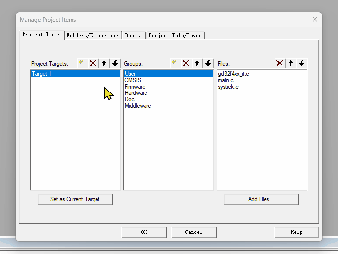</p><ol list="u16e3412e" start="2"><li data-lake-id="ua464bd65" data-lake-index-type="2" fid="ud42d3671" id="ua464bd65"><span data-lake-id="ue8522848" id="ue8522848">外部中断初始化</span></li></ol><span class="yuque-card-unsupported">[codeblock]</span><p data-lake-id="u9e96c788" id="u9e96c788" style="padding-left: 2em"><span data-lake-id="ue0edac53" id="ue0edac53">初始化流程：</span></p><ol data-lake-indent="1" list="u16e3412e"><li data-lake-id="ucd44f288" data-lake-index-type="2" fid="u2c48287d" id="ucd44f288"><span data-lake-id="u47d6f55b" id="u47d6f55b">GPIO初始化</span></li><li data-lake-id="u77406702" data-lake-index-type="2" fid="u2c48287d" id="u77406702"><span data-lake-id="u8dbccd3d" id="u8dbccd3d">外部中断初始化</span></li></ol><ol list="u16e3412e" start="3"><li data-lake-id="ub6d5b6e1" data-lake-index-type="2" fid="ud42d3671" id="ub6d5b6e1"><span data-lake-id="u58f47886" id="u58f47886">外部中断函数</span></li></ol><span class="yuque-card-unsupported">[codeblock]</span><p data-lake-id="u92bf712d" id="u92bf712d" style="padding-left: 2em"><span data-lake-id="u28c878f7" id="u28c878f7">中断执行函数流程：</span></p><ol data-lake-indent="1" list="u16e3412e"><li data-lake-id="u3aaaf112" data-lake-index-type="2" fid="u9b3c067e" id="u3aaaf112"><span data-lake-id="u7d1f701d" id="u7d1f701d">判断中断是否触发</span></li><li data-lake-id="u1ffbf9e0" data-lake-index-type="2" fid="u9b3c067e" id="u1ffbf9e0"><span data-lake-id="ud983e692" id="ud983e692">清除中断标记</span></li></ol><h4 data-lake-id="qRyDt" id="qRyDt"><span data-lake-id="u86c762b5" id="u86c762b5">关心的内容</span></h4><span class="yuque-card-unsupported">[codeblock]</span><p data-lake-id="ub3ec6393" id="ub3ec6393"><span data-lake-id="u0d732b01" id="u0d732b01">总结起来，关心的内容：</span></p><ul list="u3974403f"><li data-lake-id="ud081346a" fid="uf02823eb" id="ud081346a"><span data-lake-id="u9db941dd" id="u9db941dd">中断源，是哪个，EXTI_x</span></li><li data-lake-id="udcdf614f" fid="uf02823eb" id="udcdf614f"><span data-lake-id="ua688682a" id="ua688682a">引脚，是哪个硬件触发的。</span></li><li data-lake-id="u939917d8" fid="uf02823eb" id="u939917d8"><span data-lake-id="u04675a90" id="u04675a90">触发的条件，是高电平触发还是低电平触发</span></li></ul><h4 data-lake-id="f2tXm" id="f2tXm"><span data-lake-id="u06a24427" id="u06a24427">完整代码</span></h4><span class="yuque-card-unsupported">[codeblock]</span><h3 data-lake-id="wjn7e" id="wjn7e"><span data-lake-id="u809c8a9a" id="u809c8a9a">软件外部中断</span></h3><h4 data-lake-id="t83bF" id="t83bF"><span data-lake-id="u875e31be" id="u875e31be">需求</span></h4><p data-lake-id="u8e2c4a5c" id="u8e2c4a5c"><span data-lake-id="uf1606df5" id="uf1606df5">接收串口消息，手动触发中断事件</span></p><h4 data-lake-id="gJLC6" id="gJLC6"><span data-lake-id="ubaed2733" id="ubaed2733">开发流程</span></h4><ol list="u3f396964"><li data-lake-id="u73272199" data-lake-index-type="2" fid="uae9d680d" id="u73272199"><span data-lake-id="u022a336d" id="u022a336d">添加必要的依赖</span></li><li data-lake-id="uf8e0293e" data-lake-index-type="2" fid="uae9d680d" id="uf8e0293e"><span data-lake-id="u5835d3ff" id="u5835d3ff">外部中断初始化</span></li></ol><span class="yuque-card-unsupported">[codeblock]</span><ol list="u3f396964" start="3"><li data-lake-id="uca6a47dd" data-lake-index-type="2" fid="uae9d680d" id="uca6a47dd"><span data-lake-id="u6822c590" id="u6822c590">外部中断函数</span></li></ol><span class="yuque-card-unsupported">[codeblock]</span><ol list="uc7ae3101" start="4"><li data-lake-id="uc9f145a8" fid="u313a8cca" id="uc9f145a8"><span data-lake-id="ud8f80bcb" id="ud8f80bcb">手动触发逻辑</span></li></ol><span class="yuque-card-unsupported">[codeblock]</span><h4 data-lake-id="TVj6r" id="TVj6r"><span data-lake-id="u6aa522c5" id="u6aa522c5">关心的内容</span></h4><p data-lake-id="uad472c5f" id="uad472c5f"><span data-lake-id="u8f4dbedb" id="u8f4dbedb">哪个中断源。EXTI_x，x为0到22</span></p><h4 data-lake-id="QyAH1" id="QyAH1"><span data-lake-id="ue1e24567" id="ue1e24567">完整代码</span></h4><span class="yuque-card-unsupported">[codeblock]</span><h3 data-lake-id="xf0JW" id="xf0JW"><span data-lake-id="u08545aab" id="u08545aab">中断消抖处理</span></h3><p data-lake-id="uacf15972" id="uacf15972">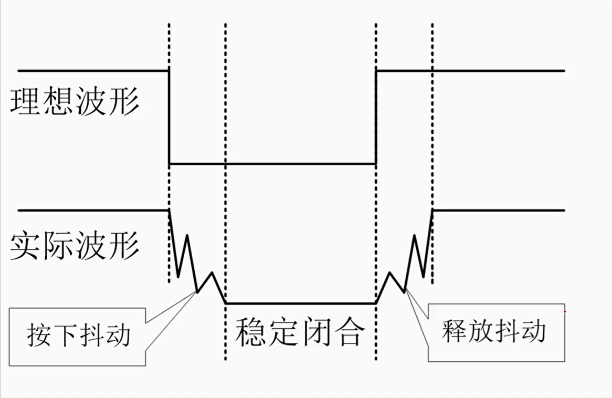</p><p data-lake-id="u0b9a2aee" id="u0b9a2aee"><strong><span data-lake-id="ue8889309" id="ue8889309">消抖方式:</span></strong></p><ul list="ubd854d1d"><li data-lake-id="u4e19e302" fid="u10b2ae69" id="u4e19e302"><strong><span data-lake-id="ud230d059" id="ud230d059">硬件消抖</span></strong></li></ul><p data-lake-id="uc92afa39" id="uc92afa39">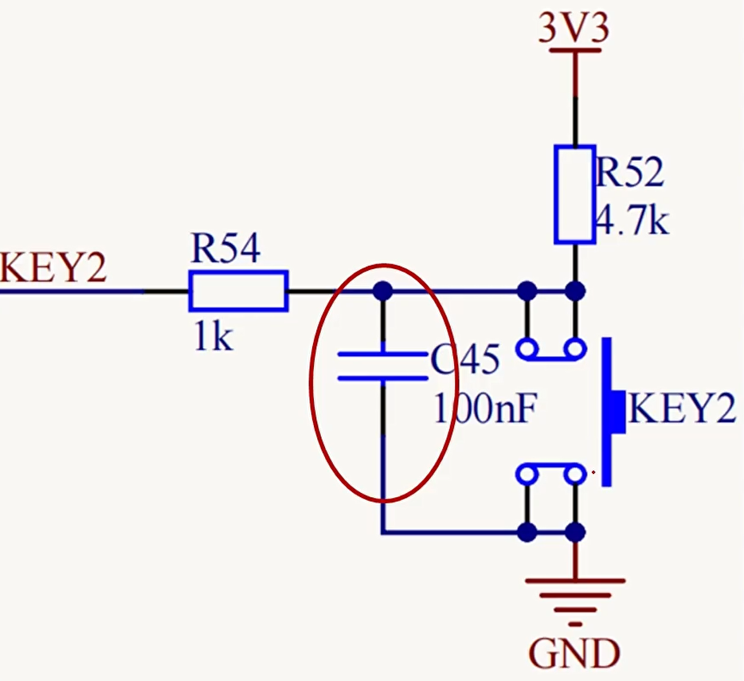</p><ul list="ubd854d1d" start="2"><li data-lake-id="u853d5592" fid="u10b2ae69" id="u853d5592"><strong><span data-lake-id="ue53dc71d" id="ue53dc71d">软件消抖</span></strong></li></ul><p data-lake-id="u876fa880" id="u876fa880"><span data-lake-id="u8e971a10" id="u8e971a10">在按键操作过程中，如果我们采用的是扫描方式实现，消抖的处理方式通常为：</span></p><ol list="ud2b555c3"><li data-lake-id="u9275e224" fid="uea2cdee8" id="u9275e224"><span data-lake-id="ucd69df46" id="ucd69df46">降低扫描频率。通常我们delay个20ms，也就是1秒扫50次，人的手速是到不了的，比较符合逻辑。</span></li><li data-lake-id="u058fbbb5" fid="uea2cdee8" id="u058fbbb5"><span data-lake-id="uf520e56b" id="uf520e56b">状态比较。比较本次和上次的状态，从而确定是否触发，降低触发误操作。</span></li></ol><p data-lake-id="u7edb825f" id="u7edb825f"><span data-lake-id="u3f6bd2f7" id="u3f6bd2f7">理论上我们可以将这种行为使用到中断处理方式中，但是，我们需要明确一点，中断中不可以睡眠时间过长。</span></p><p data-lake-id="u65d4dbc8" id="u65d4dbc8"><span data-lake-id="u4428223d" id="u4428223d">首先在降低扫描频率这个问题上我们就规避不了，但是状态比较还是可以正常使用的。</span></p><p data-lake-id="u1c2f494a" id="u1c2f494a"><span data-lake-id="ud63f60d6" id="ud63f60d6">既然睡眠不了，我们可以通过时间差进行判断中断是否进行操作，本次中断发生和上次中断发生的时间差。</span></p><p data-lake-id="ue204e488" id="ue204e488"><span data-lake-id="u419dfb2d" id="u419dfb2d">时间差就需要有时间计数概念，那么我们如何获得时间计数。</span></p><h4 data-lake-id="a0sPG" id="a0sPG"><span data-lake-id="u0b0f7450" id="u0b0f7450">系统计数模块</span></h4><p data-lake-id="ubfa62b04" id="ubfa62b04"><span data-lake-id="ufdb2fabb" id="ufdb2fabb">通常我们称之为System Tick，System Tick 不是基于标准定时器（Timer）实现的，而是使用了专门的 SysTick 定时器模块。SysTick 定时器是一个专用的计数器，用于实现系统的计时和调度。</span></p><p data-lake-id="uc3257649" id="uc3257649"><span data-lake-id="ua1ae53e7" id="ua1ae53e7">SysTick 定时器是一个 24 位的递减计数器，其工作与标准定时器（Timer）不同。它的时钟源通常是系统时钟（CPU 时钟），并且它是硬件级别的计时器，专门用于实现系统级别的计时和调度功能，比如操作系统的任务调度、延时等。</span></p><p data-lake-id="ueb3434f9" id="ueb3434f9"><span data-lake-id="ufaddcc1a" id="ufaddcc1a">我们的代码中其实已经使用到了，观察</span><code data-lake-id="ucdf083c4" id="ucdf083c4"><span data-lake-id="u8579a7b1" id="u8579a7b1">systick.h</span></code><span data-lake-id="ua8692fb2" id="ua8692fb2">和</span><code data-lake-id="u0b1890fc" id="u0b1890fc"><span data-lake-id="ue449a4f2" id="ue449a4f2">systick.c</span></code><span data-lake-id="uc6e75ecc" id="uc6e75ecc">，这个就是采用系统级别的计数器实现的。</span></p><p data-lake-id="u43596abb" id="u43596abb"><span data-lake-id="ub533e094" id="ub533e094">计数器初始化逻辑如下:</span></p><p data-lake-id="u35b6df7c" id="u35b6df7c">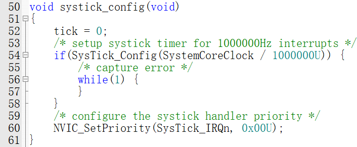</p><p data-lake-id="u079f7721" id="u079f7721"><span data-lake-id="ua50272fc" id="ua50272fc">计数器中断函数在</span><code data-lake-id="uffd5ba3e" id="uffd5ba3e"><span data-lake-id="ub9f5ca96" id="ub9f5ca96">gd32f4xx_it.c</span></code><span data-lake-id="u11e243c6" id="u11e243c6">中：</span></p><p data-lake-id="u1a092b40" id="u1a092b40">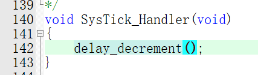</p><p data-lake-id="u43e9b006" id="u43e9b006"><span data-lake-id="u95f1d46a" id="u95f1d46a">这里每调用一次，就是一个时钟计数。同时也会调用到</span><code data-lake-id="ua9d49c5f" id="ua9d49c5f"><span data-lake-id="u9a409c93" id="u9a409c93">delay_decrement</span></code><span data-lake-id="uc4ed87bd" id="uc4ed87bd">:</span></p><p data-lake-id="uc18791bd" id="uc18791bd">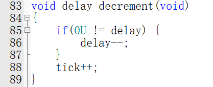</p><p data-lake-id="u5934df95" id="u5934df95"><span data-lake-id="u5278a09d" id="u5278a09d">进行简单的总结：</span></p><p data-lake-id="uecaf8805" id="uecaf8805"><span data-lake-id="ub6ba4716" id="ub6ba4716">整个系统在启动时，配置了时钟计数，</span><code data-lake-id="ue958dd8e" id="ue958dd8e"><span data-lake-id="u73e6c014" id="u73e6c014">SystemCoreClock / 1000000U)</span></code><span data-lake-id="uc279dca3" id="uc279dca3">，这里的意思是每秒钟调用</span><code data-lake-id="u6d73e870" id="u6d73e870"><span data-lake-id="uc0d8e813" id="uc0d8e813">delay_decrement()</span></code><span data-lake-id="uef658cbe" id="uef658cbe">函数1000000次。</span></p><p data-lake-id="u711ec4ec" id="u711ec4ec"><span data-lake-id="u56853239" id="u56853239">​</span><br/></p><h4 data-lake-id="HiBGg" id="HiBGg"><span data-lake-id="u07c5ce2c" id="u07c5ce2c">自定义计数器</span></h4><span class="yuque-card-unsupported">[codeblock]</span><p data-lake-id="ucc108a8a" id="ucc108a8a"><span data-lake-id="uabab85cc" id="uabab85cc">每次tick的时候，进行自增长，这样就相当于记录了时间：</span></p><span class="yuque-card-unsupported">[codeblock]</span><p data-lake-id="uc03f063e" id="uc03f063e"><span data-lake-id="u0928f4b2" id="u0928f4b2">再将这个tick时间对外，外面使用者就可以获得时间计数了</span></p><span class="yuque-card-unsupported">[codeblock]</span><h4 data-lake-id="howX4" id="howX4"><span data-lake-id="u6f46524e" id="u6f46524e">systick完成代码</span></h4><span class="yuque-card-unsupported">[codeblock]</span><span class="yuque-card-unsupported">[codeblock]</span><h4 data-lake-id="aolaC" id="aolaC"><span data-lake-id="u11d6269c" id="u11d6269c">消抖完整逻辑</span></h4><span class="yuque-card-unsupported">[codeblock]</span><h2 data-lake-id="WmS3K" id="WmS3K"><span data-lake-id="u1ea99238" id="u1ea99238">练习题</span></h2><ol list="ubb4ee8d9"><li data-lake-id="ua9dcb7b5" fid="ud1a49494" id="ua9dcb7b5"><span data-lake-id="uc3a2c41e" id="uc3a2c41e">通过外部中断实现按键事件</span></li><li data-lake-id="ud79ba8b5" fid="ud1a49494" id="ud79ba8b5"><span data-lake-id="ua8c20a27" id="ua8c20a27">通过串口触发外部中断</span></li></ol><p data-lake-id="ub566bb89" id="ub566bb89"><br/></p><p data-lake-id="u30cbbaac" id="u30cbbaac"><span data-lake-id="u05ecadd1" id="u05ecadd1">​</span><br/></p><p data-lake-id="ue2f3eeed" id="ue2f3eeed"><br/></p>